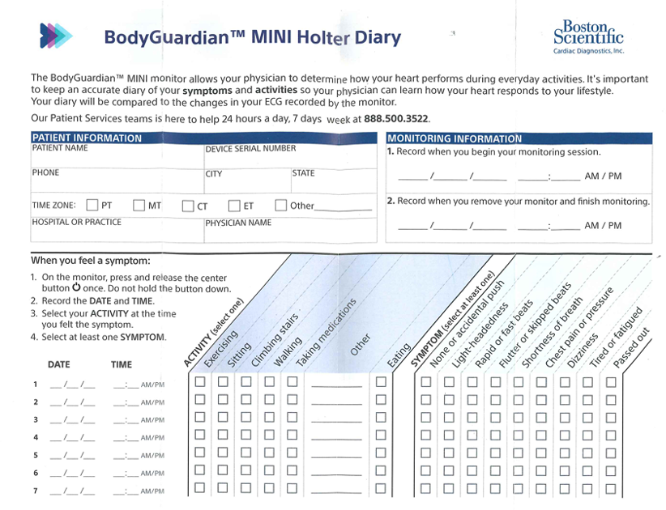
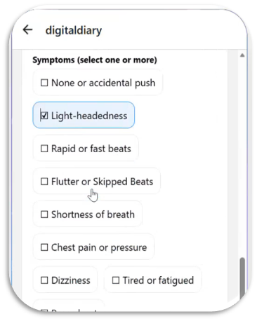

Mission
Improve the patient experience for ambulatory cardiac monitoring by replacing fragmented paper symptom diaries with structured digital data capture and a scalable support layer.
Problem
Patients using ambulatory cardiac monitors often relied on paper diaries to record symptoms, activities, timestamps, and notes. Over time, this manual workflow created friction for patients and made downstream review less consistent for clinical and support teams.
Approach
Over approximately 8 months, the concept evolved from paper workflow mapping into a mobile-first symptom logging prototype, then expanded into an AI-enabled patient support concept for common non-clinical device and workflow questions.
Validation
Collaborated with engineering, patient services, product, sales, regulatory, legal, and cardiac technician stakeholders to evaluate workflow feasibility, patient value, implementation risk, and business impact through iterative feedback.
Outcome
The work connected patient experience, data quality, support efficiency, and market competitiveness into a clearer product direction. The concept was approved by divisional leadership for further exploration.
From Paper to Digital


This shift from paper to digital was the first major product step, converting a fragmented workflow into structured, reviewable data.
AI Support Layer
After digitizing the symptom logging workflow, the next step was adding an AI-powered patient FAQ assistant to help answer common non-clinical device and workflow questions, reducing support friction and improving the overall patient experience.
The chatbot was designed as a support layer on top of the digital diary experience, not as a replacement for clinical care.